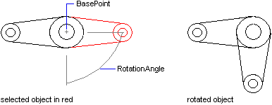

|
Rotate Method |
Rotates an object around a base point.
Signature
object.Rotate BasePoint, RotationAngle
Object
All Drawing Objects, AttributeReference
The object this method applies to.
BasePoint
Variant (three-element array of doubles); input-only
The 3D WCS coordinates specifying the point through which the axis of rotation is defined as parallel to the Z axis of the UCS.
RotationAngle
Double; input-only
The angle in radians to rotate the object. This angle determines how far an object rotates around the base point relative to its current location.
Remarks
 |
| Comments? |